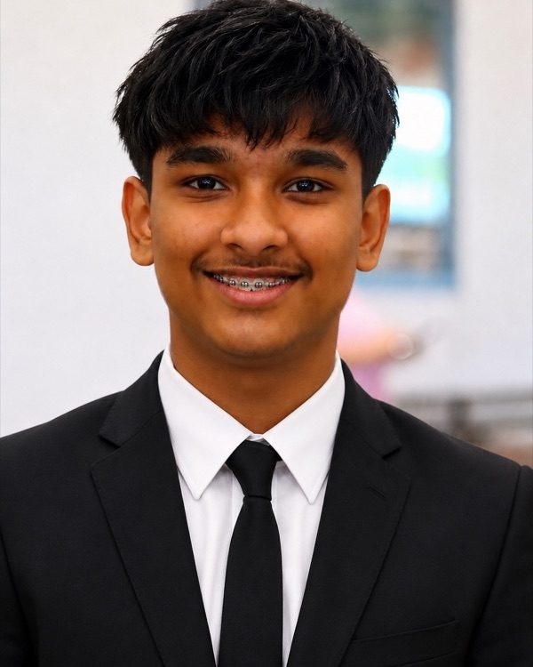

Aarush Karak
Student and software developer in Mississauga, Ontario. I build web apps, developer tools, and interfaces that use more than a keyboard.
I'm in Grade 10 at John Fraser Secondary School and the founder of TheCoderBros, a small studio where I build software for clients. Most of what I make starts as an experiment and ends up on GitHub.

Selected work
-
A browser-based operating system with touch-free hand-gesture navigation and a 3D spatial interface.
-
A command-line dashboard that pulls GitHub activity, git health, and project stats into one view.
-
A full-stack market dashboard with live quotes, portfolio tracking, and Prophet-based forecasts.
-
An interactive 3D encyclopedia that plots connections between topics on a rotatable globe.
About
I got into programming through game design and stayed for the web. These days I'm most interested in spatial computing, AI, and tools that make development feel faster.
Most of what I know came from starting projects I didn't know how to finish, then figuring them out. I'm currently spending most of my time on HELIOS and astro-tasks.
I'm open to freelance work. The fastest way to reach me is email.
- 1st place, TSA State ChampionshipVideo Game 3D Design
- Invited scholar, National Youth Leadership ForumEngineering
This site has a command line. Type help in the terminal to see the pages.